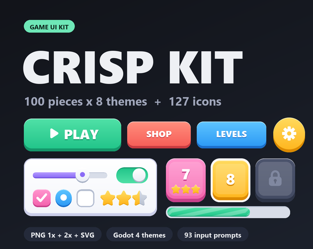

Crisp Kit: casual game UI kit with 8 themes, icons and Godot 4 themes
Crisp Kit is a flat, rounded UI kit for casual and mobile-style games: 100 pieces in each of 8 colour themes, 127 icons and 93 keyboard, mouse and gamepad prompts. Everything comes as PNG (1x and 2x) and SVG with 9-slice borders listed, plus ready-made Godot 4 themes.

- Contents
- 1255 images: 100 pieces x 8 themes, 127 icons, 93 input prompts, 15 colour pieces
- Formats
- PNG 1x + 2x, SVG, sheets.json, Godot 4 themes
- Price
- $6.99 on itch.io (anipixels.itch.io/crisp-kit)
- Free sampler
- 57 pieces, free on itch.io (anipixels.itch.io/crisp-kit-free)
- Licence
- Royalty-free for commercial and non-commercial projects, no credit required, no reselling or redistribution of the files
- Made by
- Anipixels, with procedural code written with an AI assistant (Claude)
What is included
- 800 themed pieces: 100 per theme in 8 themes (mint, sky, gold, coral, violet, pink, slate, light), with the same file names in every theme so you can swap a whole look.
- Per theme: buttons (33), panels (9), bubbles (4), bars (5), sliders (5), toggles (12), tabs (4), inputs (3), badges (7), level select (4), misc (14).
- Buttons in 7 shapes (large, medium, small, pill, square, round, flat outline) with normal, hover, pressed and disabled states, plus close and plus buttons.
- Panels, window and modal frames, cards, 9-slice frames, tabs, text inputs, tooltip and speech bubbles, ribbons, badges, a resource pill, progress bars and fills (plain, striped, thin), slider track / fill / knob, check boxes, radio buttons, toggles, level-select tiles (unlocked, pressed, current, locked), list rows, slots, scroll bars, page dots.
- 127 icons in white and dark: settings, home, play, pause, restart, sound, music, shop, cart, coin, gem, heart, star, trophy, lock, key, gift, chest, clock, shield, sword, map, user, friends, chat, mail, bell, leaderboard, calendar and many more.
- 93 input prompts in a light and a dark style: 50 keyboard keys (A-Z, 0-9, arrows, Space, Enter, Shift, Ctrl, Alt, Esc, Tab, Backspace), 7 mouse glyphs and 36 generic gamepad glyphs (A/B/X/Y, plain face buttons, d-pad, LB/RB/LT/RT, sticks, Start/Select). No console logos.
- 15 colour pieces that fit any theme: stars (full, half, empty, two sizes), coin, gem, heart, energy, crown, trophy, gift, key, alert badge.
- Godot 4 project: one Theme resource per colour theme (1x and 2x versions) that styles Button, CheckBox, CheckButton, ProgressBar, HSlider, LineEdit, TabContainer, panels, tooltips and more, with type variations for every extra shape, and a demo scene (main menu, shop, level select, widgets, settings popup, theme picker).
Details
- 3765 image files: 1255 images, each as PNG 1x, PNG 2x and SVG. That is 335 different designs (100 themed + 15 colour + 127 icons + 93 prompts); the themes, the two icon colours and the two prompt styles multiply them.
- 65 of the 100 themed pieces are 9-slice / 3-slice. Borders are in sheets.json and in UNITY.txt.
- Icons are 32 px (1x) and 64 px (2x). Transparent PNG, straight alpha.
- palette.json lists the hex colours of every theme.
- No font is bundled. The demo and screenshots use the system font; any rounded bold font fits (Baloo 2, Fredoka and Nunito are free).
- Download size: CrispKit_Full.zip is 8.95 MB.
Formats and engines
- PNG at 1x (made for roughly 960 x 540 to 1280 x 720 layouts) and 2x (1080p and up, phones, HiDPI).
- SVG vector files of the same pieces.
- sheets.json listing every piece: file paths, sizes, 9-slice borders, content padding and notes.
- Godot 4 Theme resources and a demo scene.
Works with: Any engine that loads PNG or SVG. Godot 4 (4.3 or newer, tested in 4.7) gets ready-made themes. Unity, GameMaker, Construct, Phaser and others use the PNGs with their nine-slice feature and the border values from sheets.json. Unity: sprites only, no prefabs; UNITY.txt gives the border values to type into the Sprite Editor.
Free sampler
The free sampler has 57 pieces as PNG (1x and 2x) and SVG, with a sheets.json of sizes and 9-slice borders: 26 pieces from the mint theme, 3 colour pieces (star full, star empty, coin), 20 white icons and 8 input prompts.
The free itch.io page also hosts the playable browser demo of the full pack.
Licence
Use the graphics in any number of commercial or non-commercial projects (games, apps, websites, videos, streams, game jams). Edit, recolour, resize or otherwise modify them. Credit is appreciated but never required. You may not resell, redistribute or give away the graphics themselves, on their own or as part of another asset pack, UI kit or template, modified or not, and you may not claim them as your own original work in an asset pack.
This is a summary of the LICENSE.txt inside the download. The sampler's copy of that file: crisp-kit.txt.
Guides
- How to make a cozy game UI theme in Godot 4: A Theme built from 9-slice PNGs: StyleBoxTexture margins, button states, a rounded font and theme type variations.
Questions
Which engines does it work with?
Any engine that loads PNG or SVG. Godot 4 gets ready-made themes; Unity, GameMaker, Construct, Phaser and others use the PNGs with their nine-slice feature and the border values from sheets.json.
Can I recolour it?
Yes. Edit the SVGs, tint the PNGs, or start from the light theme, which is neutral.
Can I mix themes?
Yes. Every theme has the same pieces at the same sizes, so a coral close button drops into a mint window.
Is there a free version?
Yes: Crisp Kit Free has 57 pieces to test in your project. The same 57 pieces can be previewed on this site's UI kit preview.
Do the sounds in the demo come with it?
No, the click sounds in the web demo are previews from Crisp UI, a separate sound pack.
Can I use it in a commercial game, and do I have to give credit?
It is royalty-free for commercial and non-commercial projects and no attribution is needed. You may not resell or redistribute the assets themselves, modified or not.
Was AI used to make it?
Yes, for the code. Every shape is drawn procedurally by code that was written with the help of Claude, an AI assistant. No AI image generators, no traced or third-party art, no font files.
Screenshots


How it was made
Every shape is drawn procedurally by code that was written with the help of Claude, an AI assistant. No AI image generators, no traced or third-party art, no font files.
Crisp Kit is part of the Crisp Everything Bundle: all 14 Crisp packs for $19.99 instead of $81.86 bought one by one. View the bundle on itch.io